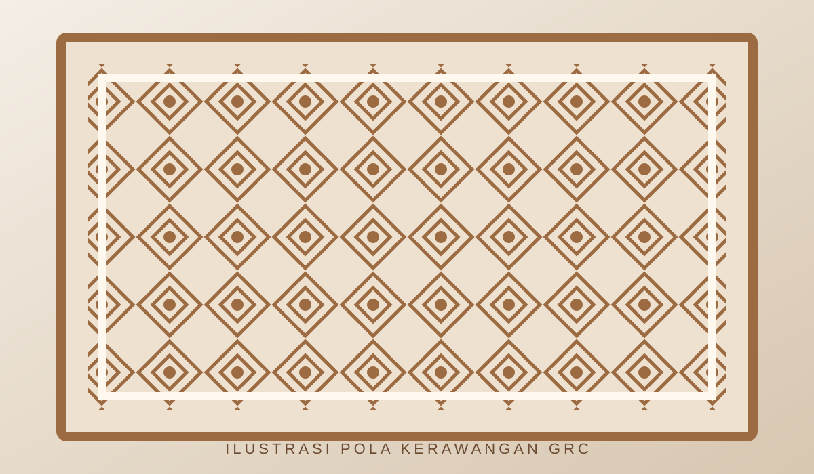
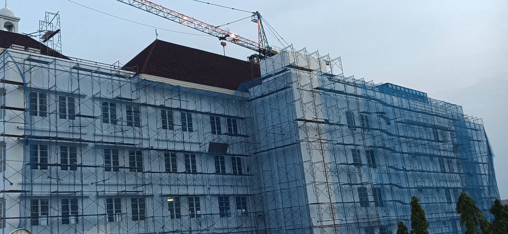
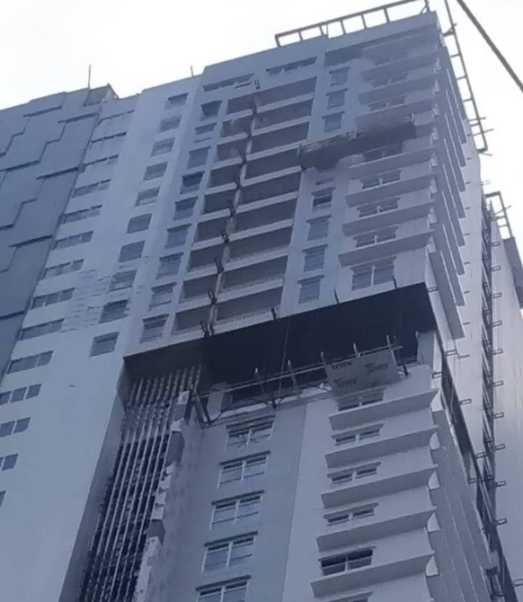
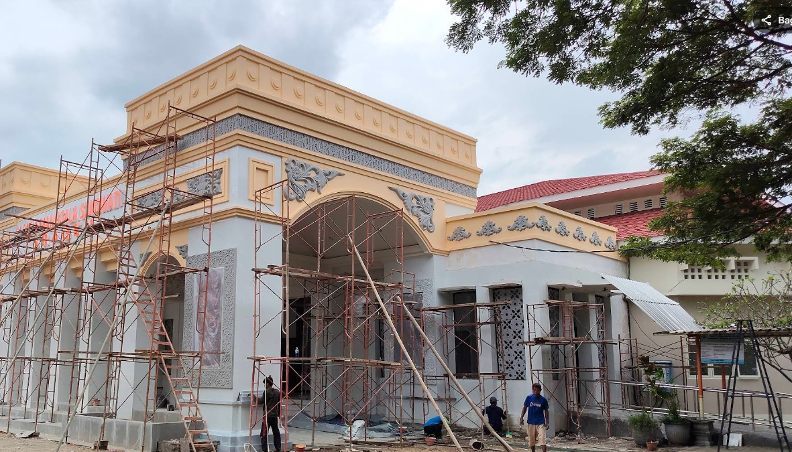
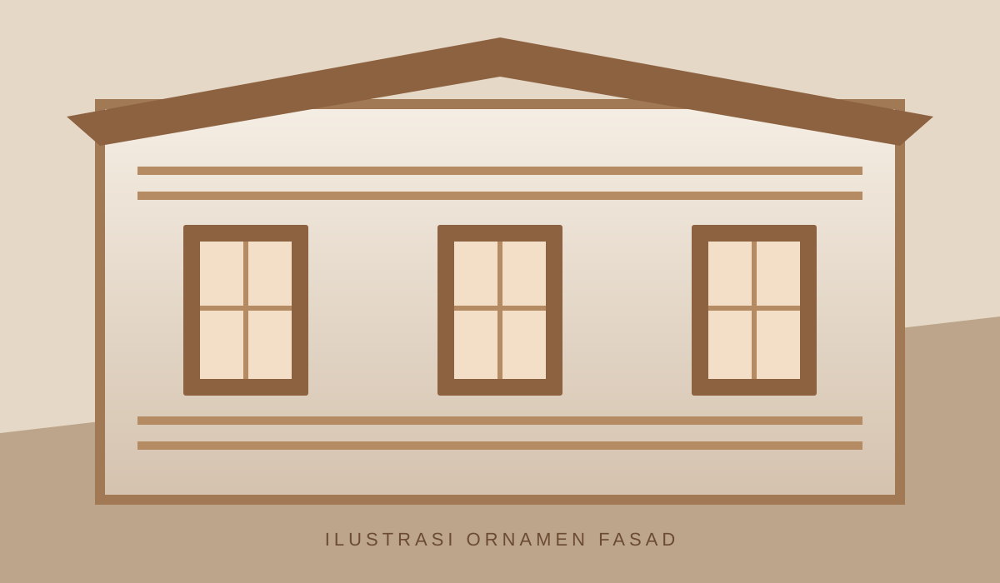
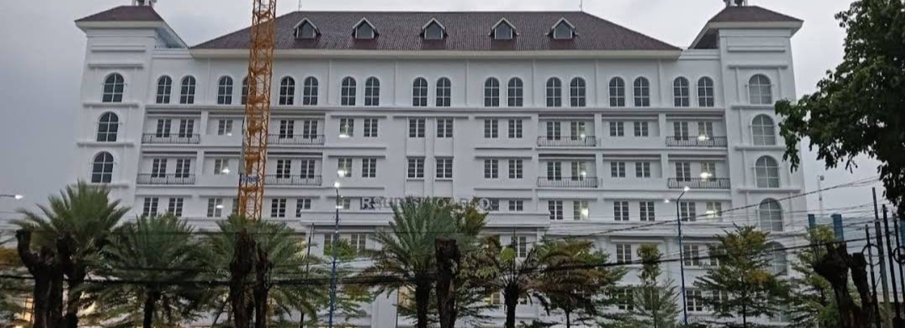

MASJID
Kerawangan Masjid
Panel berpola untuk komposisi fasad, penyaringan cahaya dan ventilasi sesuai rancangan.
Diskusikan kebutuhanKerawangan GRC masjid, kubah, lisplang, ornamen fasad dan elemen custom — mulai dari pembahasan kebutuhan, referensi visual, hingga ruang lingkup pekerjaan.

Pilih jenis pekerjaan yang paling mendekati kebutuhan Anda. Spesifikasi akhir ditentukan melalui konsultasi dan pemeriksaan detail proyek.

Panel berpola untuk komposisi fasad, penyaringan cahaya dan ventilasi sesuai rancangan.
Diskusikan kebutuhan
Pembahasan bentuk, ukuran, tampilan, sistem pendukung dan finishing untuk kebutuhan proyek.
Diskusikan kebutuhan
Garis tepi atap dan profil dekoratif yang menyatu dengan proporsi desain bangunan.
Diskusikan kebutuhan
Aksen geometris, bingkai, profil dan ornamen yang mengikuti bahasa desain arsitektur.
Diskusikan kebutuhan
Opsi panel eksterior dengan pertimbangan sistem rangka, sambungan, cuaca dan finishing.
Diskusikan kebutuhan
Pembahasan pekerjaan khusus berdasarkan gambar, dimensi, lokasi dan hasil yang dituju.
Diskusikan kebutuhanInformasi dasar yang lengkap membantu tim memahami jenis pekerjaan dan hal-hal yang perlu diverifikasi.
Pilih jenis layanan dan jelaskan fungsi elemen.
Siapkan foto, gambar kerja atau ukuran jika tersedia.
Tinjau material, finishing dan kebutuhan pemasangan.
Ruang lingkup dan biaya dikonfirmasi setelah tinjauan.

Seluruh foto asli dari folder pustaka GRC E COMMERCE/image ditampilkan di sini. Pilih foto untuk melihat ukuran penuh.
Foto workshop yang tersedia dari tautan Google Maps ditampilkan langsung di kartu lokasi. Klik foto atau tombol untuk membuka sumber dan melihat dokumentasi lainnya; foto tidak diduplikasi.
Foto lokasi sesuai tautan Google Maps yang diberikan. Koordinat referensi: -7.4943589, 112.4860963.
Koordinat referensi: -7.1332177, 111.622342. Foto di atas berasal dari tautan Google Maps yang diberikan.
Silakan kirimkan ukuran, pola referensi, fungsi panel dan lokasi proyek. Kelayakan desain serta material perlu dikonfirmasi secara teknis.
Jenis pekerjaan, lokasi, ukuran atau volume, gambar referensi, finishing dan target waktu jika sudah ada.
Belum. Harga, material, cakupan pemasangan dan jadwal harus dikonfirmasi berdasarkan detail proyek.
Tidak. Galeri diberi label sebagai inspirasi visual eksternal. Dokumentasi proyek nyata perlu ditambahkan setelah hak penggunaan dikonfirmasi.
Formulir ini menyiapkan ringkasan untuk WhatsApp. Pesan baru terkirim setelah Anda menekan tombol kirim di WhatsApp.
Siapkan informasi proyek agar konsultasi lebih terarah. Jangan kirim data rahasia atau dokumen sensitif.